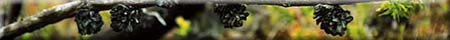

|
 Besides its branches, roots, and leaves, a mature tree grows one other important structure - the flower (or cone, in the case of evergreens). These are the reproductive structures from which the seeds are produced. Fast-growing species may mature and produce seeds after as little as 5 to 10 years' growth, while other species take 30 to 40 years to mature. A certain size is needed before flowering takes place, and suppressed trees may not flower even at an age of 50 to 100 years or more. With the growth of flowers, fruit, and seeds, the life cycle of the tree comes full circle. The seeds are dispersed by wind, water, or animals, and the few that find a suitable spot will germinate and begin their journeys of growth toward the sun. Trees of either class may contain both female and male reproductive organs or may possess only one kind. In the latter case, a tree of the opposite gender would be required in order that pollination and then fertilization could take place.
|